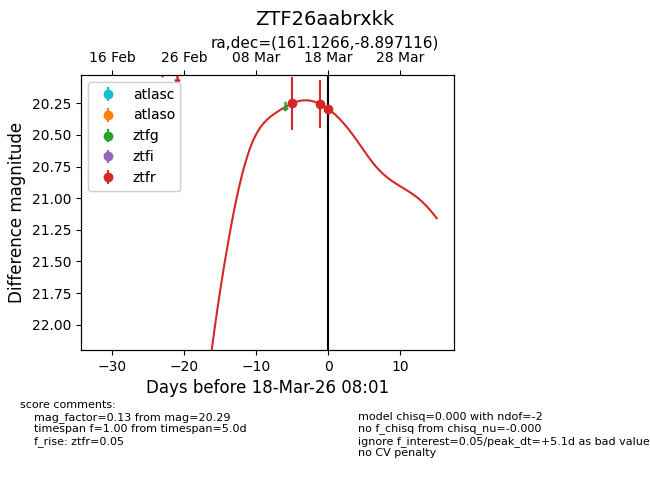
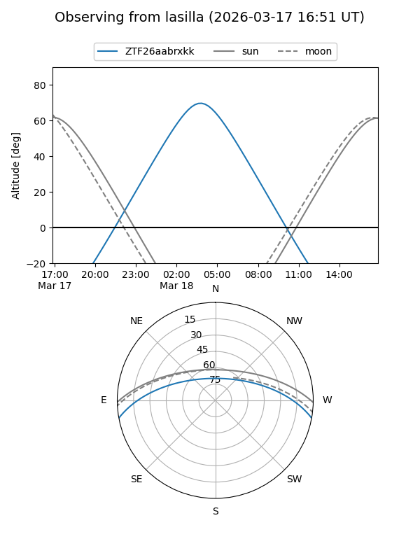
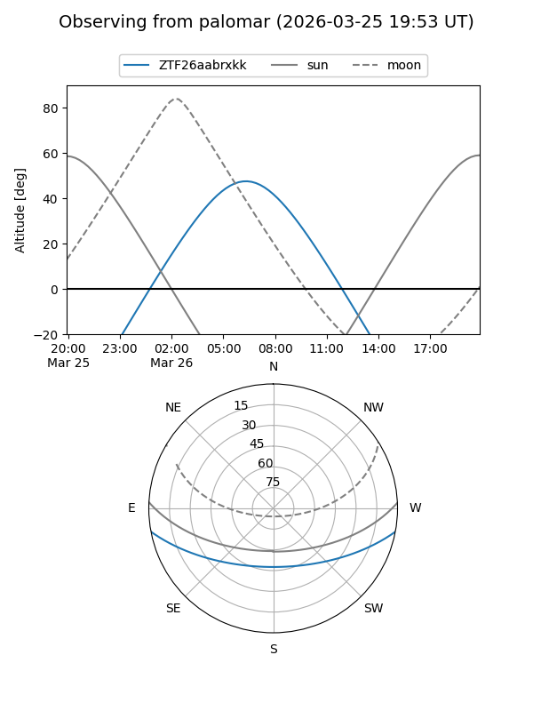
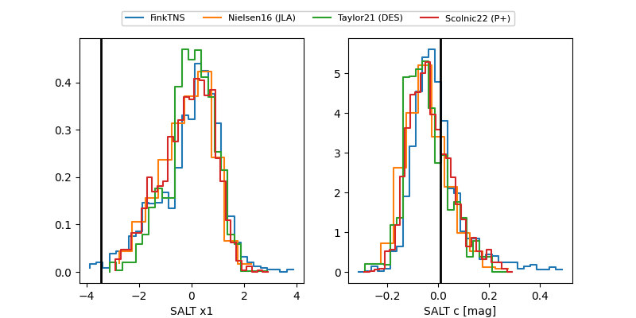

ZTF26aabrxkk
Target ZTF26aabrxkk at 2026-03-18 08:03
Aliases and brokers:
FINK: link
Lasair: link
ALeRCE: link
alt names
ZTF26aabrxkk (ztf,fink_ztf)
Coordinates:
equatorial (ra, dec) = 161.1266,-8.89712
equatorial (HMS+DMS) = 10:44:30.38,-08:53:49.62
galactic (l, b) = (257.9962,+42.63400)
Flags:
Photometry:
last ztfr=20.29
3 ztfr detections
Lightcurve

Visibility


Additional plots
